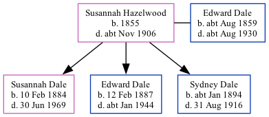

Susannah Dale (née Hazelwood) 1855 - c1906
[ Home ] | [ Calendar ] | [ Surnames Index ] | [ Family History ]Susannah Hazelwood, the wife of Edward William Dale (the first cousin three-times-removed on the father's side of Nigel Horne), was born in Thetford, Norfolk, England in 18551 and married Edward (a laborer ag with whom she had 3 children: Susannah Elizabeth, Edward William Alfred and Sydney) at St Mary's Church, Chilham, Kent, England on Nov 11, 18823.
Throughout her life, she lived at Prospect Row, Harbledown, Kent on Apr 5, 18911; and at Shalmsford Street, Chartham, Kent on Mar 31, 19014.
She died c. Nov 1906 in Bridge, Kent, England2.
Children
- Susannah Elizabeth was born on Feb 10, 1884
- Edward William Alfred was born on Feb 12, 1887
- Sydney was born c. Jan 1894
Citations
- 1891 England, Wales & Scotland Census - Findmypast (was age 36 and the wife of the head of the household)
- England & Wales deaths 1837-2007 - Findmypast
- England & Wales Marriages 1837-2005 - Findmypast
- 1901 England, Wales & Scotland Census - Findmypast (was age 46 and the wife of the head of the household)
Media
Kent, Canterbury Archdeaconry marriages - GBPRS/CANT/MAR/006261/2
Family Tree
Generated by ged2site. Last updated on Nov 13, 2024